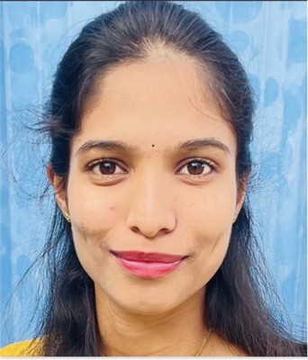

Our Research Team
Our computational chemistry research group is a dynamic team of researchers focused on catalysis discovery and materials design. We foster a collaborative environment where team members work together to develop novel catalysts, design energy materials, and understand surface phenomena through DFT methods.
Principal Investigator

Dr. P. Muthu Austeria
Assistant Professor & Group Leader
Department of Chemistry, Jain University
Ph.D. in Computational Chemistry from Pondicherry University. Extensive international research experience in computational catalysis discovery, DFT-based materials design, and energy applications. Research interests include gas sensing, 2D materials, MOFs, solid-state batteries, and catalyst design.
Postdoctoral Researchers
Future Position
Postdoctoral Researcher
Computational Chemistry
Additional postdoctoral positions may become available based on research funding and project needs. Candidates with background in computational catalysis, DFT methods, materials design for energy applications, or related areas are encouraged to inquire.
PhD Students



PhD Position 4 - Available
PhD Student
Gas Sensing & Separations
PhD position focusing on the computational design of novel porous materials and 2D surfaces for selective gas sensing and separation technologies.
PhD Position 5 - Available
PhD Student
Machine Learning in Chemistry
PhD position exploring the intersection of machine learning algorithms and density functional theory to accelerate the discovery of high-performance catalysts.
MSc Project Students
MSc Project 1 - Available
Master's Research Student
Computational Chemistry Methods
Master's thesis project involving introduction to computational chemistry methods and their applications. Suitable for students interested in learning theoretical approaches to chemistry.
MSc Project 2 - Available
Master's Research Student
Molecular Property Prediction
Master's project focusing on using computational methods to predict molecular properties. Students will learn to use quantum chemistry software packages and analyze computational results.
MSc Project 3 - Available
Master's Research Student
Chemical Reaction Mechanisms
Master's project investigating chemical reaction mechanisms using computational approaches. Students will study transition states, reaction pathways, and energy profiles of chemical reactions.
MSc Project 4 - Available
Master's Research Student
Data Analysis & Visualization
Master's project combining computational chemistry with data science approaches. Focus on analyzing computational results, developing visualization techniques, and statistical analysis of molecular data.
Alumni & Former Members
As our research group grows, this section will feature former team members who have contributed to our research and have moved on to successful careers in academia, industry, and research institutions.
Alumni profiles will be added as the research group develops
Interested in Joining Our Team?
We welcome applications from motivated individuals at all career stages who are interested in computational chemistry research. Our group provides a supportive environment for learning and developing expertise in theoretical and computational approaches to chemistry.